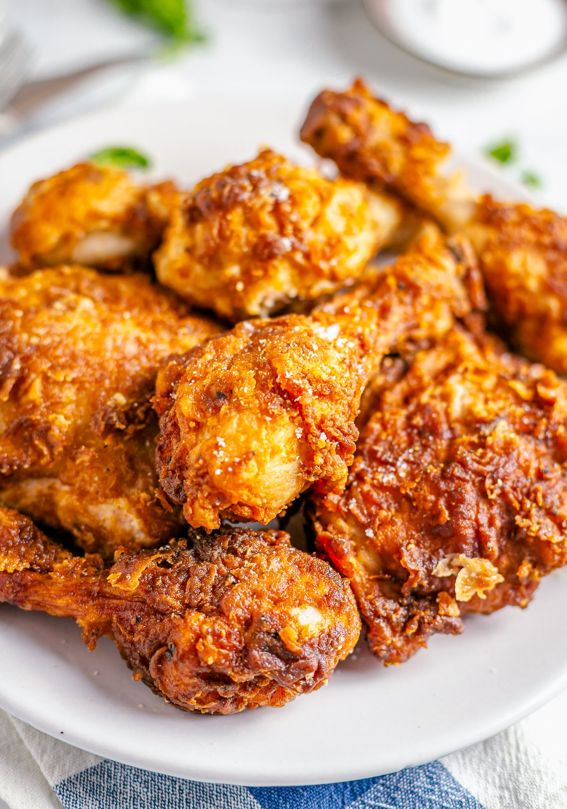

Chicken Stew Kenyan style

As a Kenyan, I love kienyeji chicken because of the natural intense flavour . If you are not from Kenya,
kienyeji simply a free range chicken, one that hsd been rared on the farm and been let lose to roam around
and eat what mother nature has to offer, Thus the meat often tends to be tougher then broiler chicken but much
more flavourful. The Ingridients that make this dish mainly Kenyan, are the kienyeji chicken of course, onions,
tomatoes,dhania,chili,green hohos,royco.
For this recipes, I gave it a twist with the addition of other Ingridients as well as used mint
leaves because they give the dish a refreshing, vibrant taste. I also hope it inspires you to explore
different herbs, but please don't go 'kuku'( crazy ) if you cant find mint leaves just use what you have.
Ingridients
- 1 full chicken(cooked)
- 1 large onion(chopped)
- 1 tbsp oil
- 2 tbsp curry powder
- 2 tbsp royce(original)
- 4 large ripe tomatoes (chopped)
- 1/2 red, 1/2 yellow,1/2 green capsicums -'hoho'(chopped)
- 2-3 garlic cloves grated
- 1 tsp ginger grated/minced
- 1 fresh chili chopped (optional)
- 2 cups broth (your remaining broth from the boiled chicken)
- 2 Handfuls of mixed herbs (dhania and mint)
- salt to taste
- 1 heaped tsp fresh(grated)
- 1 fresh chilli (flesh slightly poked with a knife)
- 3 cups(750ml) water
- 1 full large chicken 1.5kg - 2kg(chopped)
- i tsp salt
Method
- In a large sufuria (sauce) heat oil, fry onions until soft.
- Add the ginger, garlic,chili and fry until aromatic.
- Add the curry powder and chicken cube and fry briefly about 15-30secs
- Add the tomatoes fry,cover with a lid and cook for 5 minutes or until tomatoes are soft.
- Add the chicken pieces, stir well and fry for about two minutes
- Add the water, bring to boil, cover and simmer for 10 minutes
- Add the capsicums, stir well, check the consistency and taste of stew simmer for 5 minutes.
- Lastly add the dhania, stir well
- serve and enjoy with rice,chapati,ugali
Please note.You can add the hohos earlier if you prefer them further cooked. This recipe can serve
6, but if you are considering seconds then 4 is a good number.